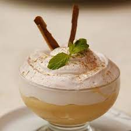

Suspiro Limeno

Description
This is a classic peruvian dessert, very popular in the city of Lima. It's easy to prepare and irresistible to taste. (6 servings)
Ingredients
- 14 ounces of sweetened condensed milk
- 12 fluid ounces of evaporated milk
- 1 tablespoon of vanilla extract
- 2 beaten egg yolks
- 2 beaten egg white
- 1 cup confectioners sugar
- 1/4 teaspoon of ground cinnamon (Optional)
Steps
- Whisk together the sweetened condensed milk, evaporated milk, vanilla, and egg yolks in a saucepan. Place over medium-low heat and gently cook until the mixture thickens, stirring constantly with a wooden spoon, about 30 minutes. Pour into a heatproof serving dish and set aside.
- Whip the egg whites with confectioners' sugar to stiff peaks. Spread meringue on top of milk mixture. Refrigerate until cold, about 3 hours. Sprinkle with cinnamon before serving, if desired.
- You can also pasteurize your egg whites (in case you are pregnant, you are infirm, an elder or young children), you can make a Swiss meringue: combine the 2 egg whites with about 1/2 cup granulated sugar in a stainless steel mixing bowl. Heat over a double boiler, stirring constantly, until sugar is melted and egg whites are hot to the touch. Remove from heat and whip until fluffy and stiff.